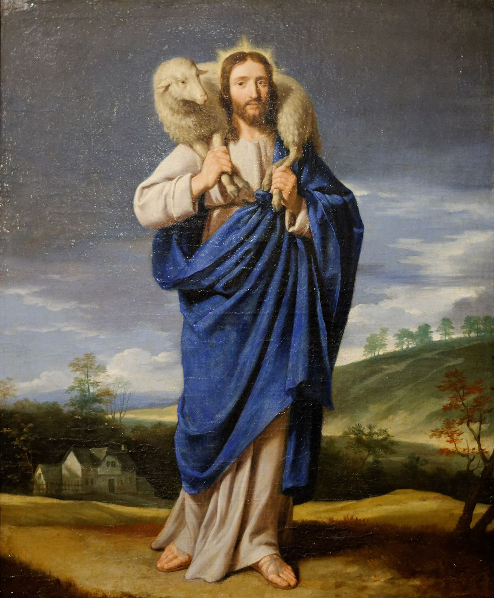

1 Peter 2 — The Mister Translation

⚠ The shepherd carrying home the sheep that had wandered, the picture behind verse 25, ‘you were like sheep wandering, but now you have turned back to the shepherd and overseer of your souls.’

Translator’s Notes
“So, putting away all malice and all deceit and hypocrisies and envies and all slanders, like newborn infants, long for the unadulterated milk of the word, so that by it you may grow into salvation.” “Putting away” is the verb of “putting away all filth” at James 1:21. Katalalia, “slander,” stands in two verses, the other the “slanders” of 2 Corinthians 12:20 (dictionary); “envies” is phthonos (dictionary). Artigennētos, “newborn,” stands in one verse (dictionary), after the readers were “born again” at 1 Peter 1:23; brephos, “infant,” stands in eight verses, among them the “infant wrapped in strips of cloth” at Luke 2:12 (dictionary). “Long for” is epipotheō, as at James 4:5 (dictionary). ⚠ Logikos stands in two verses, here and the “reasonable service” of Romans 12:1; it is read as “reasonable,” as “spiritual,” or, after “the word of God” of 1 Peter 1:23, as “of the word”; this translation prints the last, and readings differ (dictionary). Adolos, “unadulterated,” stands in one verse; it is “without dolos,” the “deceit” of verse 1, so the milk has none of what the readers are to put away (dictionary). Paul and Hebrews use milk as a rebuke, at 1 Corinthians 3:2 and Hebrews 5:13; here it is what newborns rightly want. Robinson–Pierpont lacks “into salvation” (the apparatus). The KJV reads “desire the sincere milk of the word, that ye may grow thereby”; the ASV reads “long for the spiritual milk which is without guile”; the NWT 1984 reads “the unadulterated milk belonging to the word”; the NIV reads “crave pure spiritual milk.”
“If you have tasted that the Lord is kind.” The words are the Greek of Psalm 34:8, “Taste and see that the Lord is kind” (33:9 in the Greek numbering, checked), where the Hebrew has the name Jehovah (checked). The next verse goes on “coming to him, a living stone,” so that the Lord tasted is Christ; this translation therefore keeps “Lord” here. The adjective chrēstos, “kind,” stands in seven verses, among them “he is kind to the ungrateful” at Luke 6:35 (dictionary); some readers hear in it a play on Christos (reported, not checked here). Robinson–Pierpont reads “if indeed” (the apparatus). The KJV reads “the Lord is gracious”; the NWT 1984 reads “the Lord is kind”; the NIV reads “the Lord is good.”
“Coming to him, a living stone, rejected by people but chosen and precious in God’s sight, you yourselves too, like living stones, are being built up as a spiritual house, for a holy priesthood, to offer up spiritual sacrifices acceptable to God through Jesus Christ.” Apodokimazō, “reject,” stands in nine verses, among them “The stone the builders rejected” at Mark 12:10 (dictionary). “Chosen and precious” are the two adjectives of Isaiah 28:16, quoted in verse 6; “precious” recalls the “precious blood” of 1 Peter 1:19. Hierateuma, “priesthood,” stands in two verses, both in this chapter, here and verse 9 (dictionary). “Offer up” is anaphero, the verb of verse 24, “he himself carried up our sins.” The KJV reads “Ye also, as lively stones”; the ASV reads “a living stone, rejected indeed of men”; the NWT 1984 reads “rejected, it is true, by men”; the NIV reads “you also, like living stones, are being built into a spiritual house.”
⚠ Three stone texts. Verse 6 is Isaiah 28:16: the Greek of Isaiah has “I lay into the foundations of Zion a stone, costly, chosen, a cornerstone, precious,” and Peter’s shorter “I am placing in Zion” is the form Paul also has at Romans 9:33; the Hebrew ends “shall not make haste” where the Greek has “will not be put to shame” (all checked). Akrogōniaios, “cornerstone,” stands in two verses, the other Ephesians 2:20 (dictionary). Verse 7 is Psalm 118:22, word for word as the Greek has it (checked), the verse Jesus quotes at Mark 12:10 and Peter at Acts 4:11 (dictionary); “the preciousness” is a noun, hē timē, which some versions turn into “he is precious.” Robinson–Pierpont reads “who disobey” for “who do not believe” (the apparatus). Verse 8 is Isaiah 8:14, closer to the Hebrew, “a stone of stumbling and a rock of offence,” than to the Greek of Isaiah, which says the opposite, “not as a stone of stumbling” (both checked); Paul has the same wording at Romans 9:33 (dictionary) (dictionary). “To this they were also appointed” is read as appointed to stumble or appointed to the consequence of disobeying; readings differ. The KJV reads “Unto you therefore which believe he is precious”; the ASV reads “For you therefore that believe is the preciousness”; the NWT 1984 reads “a rock-mass of offense”; the NIV reads “which is also what they were destined for.”
“But you are a chosen race, a royal priesthood, a holy nation, a people for his own possession, so that you may proclaim the excellencies of the one who called you out of darkness into his marvelous light; you who once were not a people, but now are God’s people; who had not received mercy, but now have received mercy.” “A royal priesthood, a holy nation” is word for word the Greek of Exodus 19:6, where the Hebrew is “a kingdom of priests and a holy nation” (Exodus 19:6); “a chosen race” and “a people … to proclaim my excellencies” come from the Greek of Isaiah 43:20–21 (yet to come in this translation; both checked). Peripoiēsis, “possession,” stands in five verses, among them “the redemption of the possession” at Ephesians 1:14 (dictionary); the thought is the “treasured possession” of Exodus 19:5. Aretē, “excellence,” stands in four verses, among them “if there is any virtue” at Philippians 4:8 (dictionary). Verse 10 takes Hosea’s children’s names, Lo-Ammi, “Not-My-People” (Hosea 1:9), and Lo-Ruchamah, “Not-Pitied” (Hosea 1:6), and their reversal, which the Greek of Hosea 2:23 gives as “I will say to Not-My-People, ‘You are my people’” (checked); Paul quotes the same at Romans 9:25. Whether Peter’s readers were Gentiles, Jews or both is debated, and with it how he means the names; readings differ. The KJV reads “a peculiar people”; the ASV reads “a people for God’s own possession”; the NWT 1984 reads “a people for special possession”; the NIV reads “God’s special possession.”
“Beloved, I urge you, as sojourners and exiles, to keep away from fleshly desires, which wage war against the soul, keeping your conduct among the nations good, so that, in the very thing in which they speak against you as evildoers, they may, from your good works as they watch them, glorify God on the day of visitation.” Paroikos, “sojourner,” stands in four verses, among them Abraham’s seed as a “resident alien” at Acts 7:6 (dictionary); parepidēmos, “exile,” stands in three verses, the others the “exiles” of 1 Peter 1:1 and Hebrews 11:13 (dictionary). The pair is the one Abraham uses of himself in the Greek of Genesis 23:4 (checked), where the Hebrew is “a resident alien and a settler” (Genesis 23:4). Sarkikos, “fleshly,” stands in six verses (dictionary); “wage war” is the verb of James 4:1 (dictionary). “Conduct” is anastrophē, as “be holy in all your conduct” at 1 Peter 1:15 (dictionary), and “speak against” is the verb of James 4:11 (dictionary). Epopteuō, “watch,” stands in two verses, the other 3:2. Episkopē, “visitation,” stands in four verses, among them “the time of your visitation” at Luke 19:44; it is read as a visit in mercy or in judgment, and readings differ (dictionary). The KJV reads “strangers and pilgrims”; the ASV reads “sojourners and pilgrims”; the NWT 1984 reads “aliens and temporary residents”; the NIV reads “foreigners and exiles.”
“Be subject to every human creation for the Lord’s sake, whether to a king as supreme, or to governors as sent by him to punish evildoers and to praise those who do good. (For this is the will of God, that by doing good you should muzzle the ignorance of foolish people.)” ⚠ “Creation” is ktisis: it is read as every human institution, as every human creature, or as every authority humans set up; readings differ. “The Lord” here is read as Christ, and the translation keeps “Lord.” “King” is basileus, the word used of the emperor in “We have no king but Caesar” at John 19:15. The pattern is that of “Let every soul be subject to the governing authorities” at Romans 13:1 and “its praise” for doing good at Romans 13:3 (dictionary). The verb phimoō, “muzzle,” stands in seven verses, among them “Be muzzled” at Mark 1:25 and the ox not muzzled at 1 Timothy 5:18 (dictionary). Agnōsia, “ignorance,” stands in two verses, the other “some have no knowledge of God” at 1 Corinthians 15:34. The KJV reads “Submit yourselves to every ordinance of man for the Lord’s sake”; the NWT 1984 reads “subject yourselves to every human creation”; the NIV reads “to every human authority: whether to the emperor.”
“Live as free people, and not using your freedom as a cover for malice, but as slaves of God. Honor everyone. Love the brotherhood. Fear God. Honor the king.” “Do not turn that freedom into an opportunity for the flesh” is Paul’s version at Galatians 5:13, and “whoever was called as free is a slave of Christ” at 1 Corinthians 7:22 (dictionary). Epikalymma, “cover,” stands in one verse (dictionary). Adelphotēs, “brotherhood,” stands in two verses, here and 5:9 (dictionary). The four commands put “honor” on everyone and on the king alike, and keep “fear” for God. The KJV reads “Honour all men. Love the brotherhood. Fear God. Honour the king.”; the NWT 1984 reads “have love for the whole association of brothers”; the NIV reads “love the family of believers, fear God, honor the emperor.”
⚠ “Household slaves, be subject to your masters with all fear, not only to the good and reasonable but also to the crooked.” Oiketēs, “household slave,” stands in four verses, among them “No servant can be a slave to two masters” at Luke 16:13 (dictionary); “masters” is despotēs (dictionary). “Reasonable” is epieikēs, as at James 3:17 (dictionary). Skolios, “crooked,” stands in four verses, among them “this crooked generation” at Acts 2:40 (dictionary). This verse and the other household instructions of the New Testament were cited by defenders of slavery, in the American South and elsewhere, as approval of the institution. That use is a misreading: the verse addresses people already enslaved about how to bear unjust treatment, says nothing in favor of owning people, and rests its argument in the verses that follow on the unjust suffering of Christ, not on any right of the masters. The KJV reads “Servants, be subject to your masters with all fear”; the NWT 1984 reads “Let house servants be in subjection”; the NIV reads “but also to those who are harsh.”
“For this is grace, if because of conscience toward God someone bears up under griefs, suffering unjustly. For what glory is there if, when you sin and are beaten with fists, you endure it? But if, when you do good and suffer, you endure it, this is grace before God.” “Grace” is charis, the word of “what credit is that to you?” at Luke 6:32, which is the sense here: something God counts in a person’s favor (dictionary). “Conscience toward God” is syneidēsis theou (dictionary). Kleos, “glory, fame,” stands in one verse (dictionary). The verb kolaphizō, “beat with fists,” stands in five verses, among them the blows of Jesus’ trial, “strike him with their fists,” at Mark 14:65 (dictionary). “Endure” is the verb of “the man who endures trial” at James 1:12. The KJV reads “For this is thankworthy” and “when ye be buffeted for your faults”; the ASV reads “For this is acceptable”; the NWT 1984 reads “this is an agreeable thing”; the NIV reads “For it is commendable.”
“For to this you were called, because Christ also suffered for you, leaving you a pattern, so that you may follow in his footsteps.” Robinson–Pierpont reads “for us” (the apparatus). Hypogrammos, “pattern,” stands in one verse; it is said to be the word for the model letters a child traces in learning to write (reported, not checked here) (dictionary). Ichnos, “footstep,” stands in three verses, the others “the footsteps of the faith” of Abraham at Romans 4:12 and 2 Corinthians 12:18 (dictionary). The KJV reads “because Christ also suffered for us, leaving us an example”; the NWT 1984 reads “leaving YOU a model”; the NIV reads “that you should follow in his steps.”
⚠ “He committed no sin, nor was deceit found in his mouth. When he was reviled, he did not revile in return; when he suffered, he did not threaten, but kept entrusting himself to the one who judges justly. He himself carried up our sins in his body onto the tree, so that, having died to sins, we might live to righteousness; by his welt you were healed. For you were like sheep wandering, but now you have turned back to the shepherd and overseer of your souls.” The passage is woven from Isaiah 53. Verse 22 is the Greek of Isaiah 53:9 with “sin” for “lawlessness” (checked), “no deceit was in his mouth” at Isaiah 53:9. Antiloidoreō, “revile in return,” stands in one verse (dictionary); the silence is “he does not open his mouth” at Isaiah 53:7 and “Jesus no longer answered anything” at Mark 15:5. “He himself carried up our sins” is the Greek of Isaiah 53:12, “he himself carried up the sins of many” (checked), and of “to bear the sins of many” at Hebrews 9:28; the verb is the “offer up” of verse 5. “Tree” is xylon, as at Acts 5:30 and Galatians 3:13 (dictionary). Apoginomai, “die to, be away from,” stands in one verse. Mōlōps, “welt,” stands in one verse of the New Testament (dictionary); it is the word of the Greek of Isaiah 53:5 (checked), “by his welt there was healing for us” at Isaiah 53:5. “Like sheep wandering” is “All of us like sheep have wandered” at Isaiah 53:6. “Overseer” is episkopos, as at 1 Timothy 3:2 (dictionary); with “shepherd” it recalls “I am the good shepherd” at John 10:11 (dictionary). The KJV reads “Who his own self bare our sins in his own body on the tree” and “the Shepherd and Bishop of your souls”; the NWT 1984 reads “upon the stake,” its doctrinal rendering of the cross as an upright pole; the NIV reads “in his body on the cross.”
Patterns worth carrying forward
Where this translation keeps the exact words: “deceit” and “unadulterated,” one root; “long for,” as at James 4:5; “of the word,” with “reasonable” in the note; “kind,” as at Luke 6:35; “rejected,” as at Mark 12:10; “the head of the corner”; “a stone of stumbling and a rock of stumbling-block,” as at Romans 9:33; “a royal priesthood, a holy nation”; “sojourners and exiles,” as at 1:1 and 1:17; “conduct,” as at 1:15; “visitation” and “overseer,” one root; “muzzle,” as at Mark 1:25; “slaves of God,” as at James 1:1; “household slaves”; “grace”; “beaten with fists,” as at 1 Corinthians 4:11; “the tree”; and “welt,” as at Isaiah 53:5.
Echoes paid. The exiles of 1 Peter 1:1 and the sojourning of 1 Peter 1:17; born again at 1 Peter 1:23, now newborn infants; conduct from 1 Peter 1:15; the precious blood of 1 Peter 1:19, and now the precious stone; and suffering, then glory, from 1 Peter 1:11, worked out in “Christ also suffered for you.”
Echoes planted. Wives and husbands, “likewise,” at 3:1–7, with the unbelieving husband who may be won “as they watch” at 3:2; suffering for doing good again at 3:14–17; “Christ also suffered once for sins” at 3:18; and the “brotherhood” across the world at 5:9 (the last yet to come in this translation).
Next in this book: 1 Peter 3, already on these pages. Wives and husbands; “not repaying evil for evil”; “always ready to make a defense”; Christ who “suffered once for sins,” the spirits in prison, and Noah’s ark and baptism.